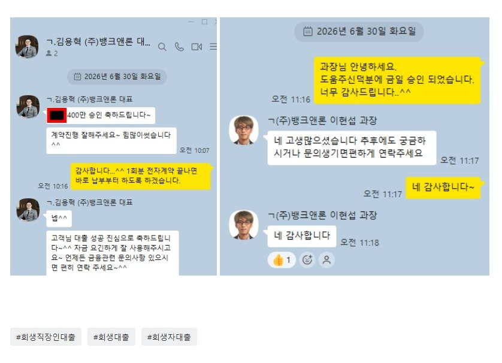

[개인회생자대출] 신청 후 2시간만에 승인. 김용혁 대표님, 이현석 과장님 감사합니다~
안녕하세요.
정말 늘 도움받기만 하기가 미안할만큼 너무 잘해주시는 뱅크앤론 김용혁 대표님, 이현석 과장님 덕분에
미납도 해결되어 마음의 부담이 훨씬 줄어들었습니다. 앞으로 개인회생 변제금도 대출 원리금 상환도 밀리지않고
열심히 하도록 하겠습니다. 먼저 정말 감사하다는 말씀 올려드립니다..
현 제 상태먼저 말씀드립니다.
■ 2월 회생신청
->기존대출을 갚기위해 신규대출을 문의하였으나 이미 연봉대비 1.3배 가량 대출금이 있어
추가대출은 불가능 상태였습니다. 그리하여 개인회생 준비를 하게 되었습니다.
개인회생 준비과정도 뱅크앤론에서 도움을 주셨습니다.
■ 5월
->변제금을 미리 모아두라는 안내를 받았음에도 상황이 여의치 않아 5월분을 모으지 못하였습니다.
■ 6월
->개시결정이 되었으며 5,6월(2개월분)을 변제했어야 했으나 한달치밖에 변제를 못하였습니다.
■ 7월(예정)
->미납(1개월분)+7월변제금일부를 내려고 하였으나 회생에 포함되지 않은 소액 연체건 (16만원)에 대한
문자를 받게 되었고 최소생활비(식대도 제외하였습니다)도 안남을 금액이었습니다.
그래서 다시한번 뱅크앤론의 문을 두드리게 되었습니다.
■ 선불폰 사용중이며 2회중 1회 미납 상태에서 어제(29일 월요일) 접수해주셨습니다.
■ 서류준비가 모두 끝난후엔 이미 오후였으며 심사가 4시 이후에 들어가서 당일 연락은 받지 못하였습니다.
부결된건 아닌지 걱정이 되었습니다만 김용혁 대표님께서 재차 긍정심사 요청드릴것이니 걱정하지 말라고
하셔서 마음이 한결 놓였습니다.
■ 혹 다음날에도 안되면 7월 일부금액을 변제후 다시 요청드리려고 했습니다만
익일(오늘 30일) 아침 9시반쯤 대출사에서 연락을 받아 입금까지 되는데 2시간 소요되었습니다.
카페에 발걸음 하시는 모든 어려운 분들을 위해 물심양면으로 애써주시는점 감사드립니다~
모두 힘내시길 바랍니다.

https://cafe.naver.com/cityman88/311688